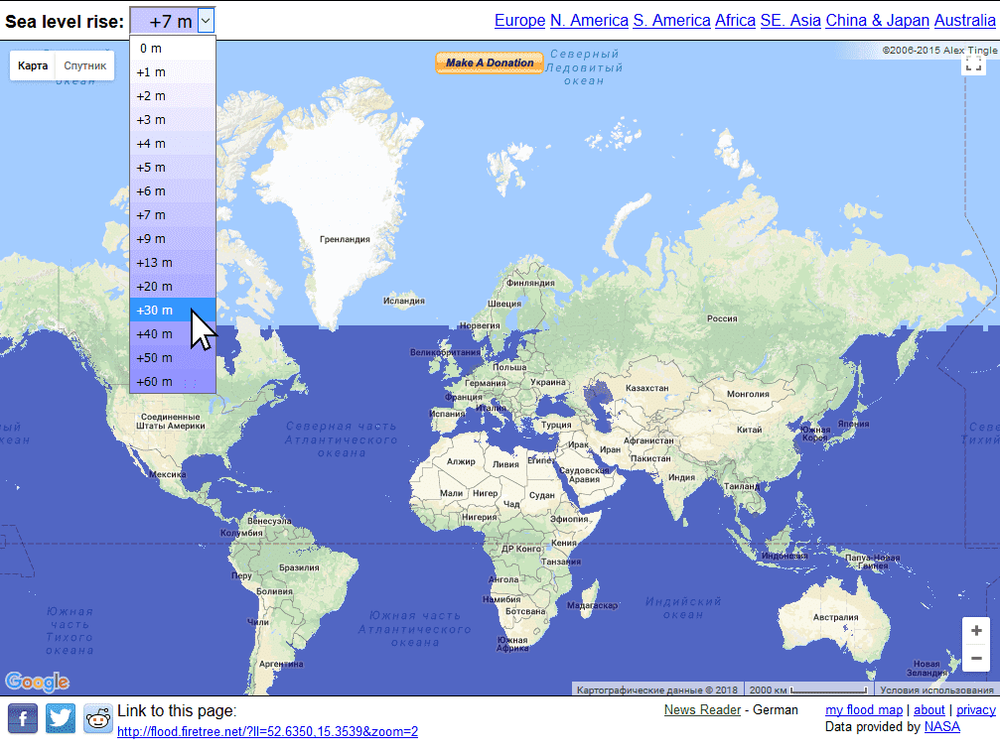
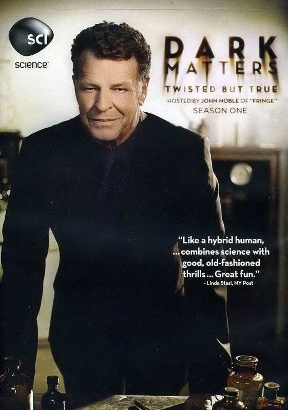
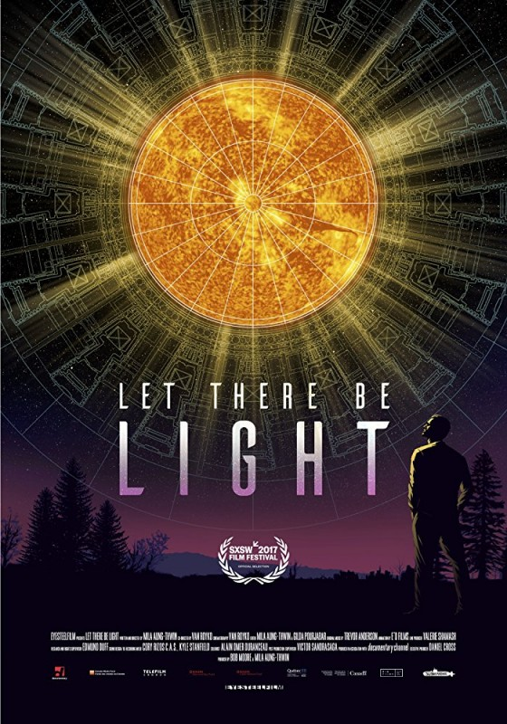
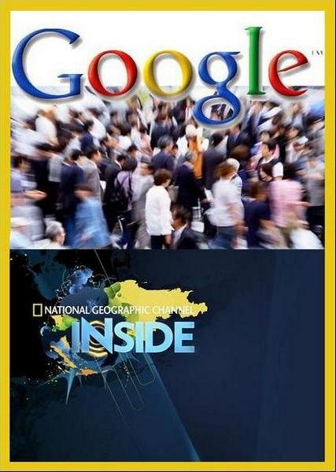

Flood maps
О глобальном потеплении сказано и написано было немало, но несмотря на это, многие люди до сих пор не могут в полной мере осознать последствия этого явления. Окисление океанов, жестокие погодные катаклизмы, снижение урожайности — и это только малая часть тех бедствий, которые может вызвать повышение температуры атмосферы. А еще глобальное потепление и вызванное им таяние льдов, что вполне естественно, грозит затоплением побережий и даже малых островов. Чтобы люди смогли наглядно представить себе последствия повышения уровня мирового океана, авторы известного журнала National Geographic создали интерактивную карту, демонстрирующую затопление прибрежных зон.
Сайт: flood.firetree.net
Thetruesize

Ученые по сей день не пришли к единому мнению, как наиболее корректно отобразить рельеф шарообразной планеты на плоском листе бумаги. Это все равно, что нарисовать карту на мандарине, снять кожуру и попытаться расплющить ее в прямоугольник. Ясно, что области, близкие к «полюсам» придется сильно растянуть. Мы все пользуемся проекцией Герарда Меркатора, но она имеет недочет: чем ближе острова и страны расположены к полюсам, тем больше они кажутся. Сайт thetruesize.com создан, чтобы мы лучше представили реальные соотношения размеров на карте.
Сайт: thetruesize.com
Labster

Labster предоставляет учащимся доступ к реалистичному лабораторному опыту, который позволит им проводить эксперименты и практиковать свои навыки в веселой и без рисковой учебной среде. В настоящее время есть 83 модели, которые охватывают все от биологии и медицины до физики и химии. Тысячи студентов университетов и старших классов используют Labster каждый год в качестве смешанного обучения. Недавнее исследование в области биотехнологии природы показывает, как студенты, использующие Labster, учились на 101% больше. Легко оценивайте или отслеживайте успеваемость учащихся и дайте им возможность контролировать свое обучение. Захватите студентов с помощью соответствующих сценариев и 3D-анимации, визуализируя жизненные науки вплоть до молекулярного уровня.
Сайт: labster.com
The FreeBSD Project

FreeBSD - это операционная система, используемая для современных серверов, настольных компьютеров и встроенных платформ. Большое сообщество непрерывно развивало это больше тридцати лет. Благодаря расширенным возможностям работы в сети, безопасности и хранилищу FreeBSD стала платформой для многих самых загруженных веб-сайтов и самых распространенных встроенных сетевых устройств и устройств хранения.
Сайт: freebsd.org
Экспериментальный термоядерный реактор

Международный экспериментальный термоядерный реактор (ITER) был заложен в 2007 году на юге Франции в шестидесяти километрах от Марселя. Строительство данного объекта первоначально планировалось закончить к 2016, но сейчас эти сроки сдвинуты до 2020. Общая смета проекта уже превышает 15 миллиардов евро. Над проектом трудятся ученые и инженеры из ЕС (сообщество выступает как единое целое), Китая, США, России, Индии, Японии, Южной Кореи и Казахстана.
Mozi

Mozi — первый спутник в мире, предназначенный для квантовой передачи информации на Землю. QSS является проектом Китайской академии наук при участии Австрийской академии наук. Общая стоимость оценивается около 100 млн долларов. Одной из задач миссии является осуществление квантовой передачи информации и установка защищённого канала связи между Пекином и Веной, полностью неуязвимого для хакеров. Спутник в течение четырех месяцев после вывода на орбиту проходил орбитальное тестирование. По состоянию на 18 января 2017, тестирование спутника закончено, все системы работают исправно и спутник переводится в фазу эксплуатации на орбите.
Сайт: wikipedia.org
Dawn ver.β

Кафе Dawn ver.β примечательно тем, что полностью укомплектовано необычными официантами-роботами. Робот Orihime-D, разработанный стартапом Ory, специализирующимся на робототехнике для людей с ограниченными возможностями. Сотрудники с такими заболеваниями, как боковой амиотрофический склероз или с травмами спинного мозга, работающие на дому, получают 1000 иен (585 рублей) в час (стандартная заработная плата для неполного рабочего дня в Японии) за то, что они подают кофе и взаимодействуют с клиентами. Но, что более важно для этих людей, это то, что они получили независимость.
Сайт: viewout.ru
Dark Matters:
Twisted But True

Рассказы о сенсационной стороне науки, включая опыты.
Let There Be Light
 Фильм рассказывает о целеустремлённых учёных, которые работают над созданием установки термоядерного синтеза.Lo and Behold, Reveries of the Connected World
 Документальная картина рассматривает прошлое, настоящее и будущее
мира интернет.
Документальная картина рассматривает прошлое, настоящее и будущее
мира интернет.
Inside: Google
 Документальный фильм о становлении крупнейшего поисковика Google.Do You Trust this Computer?
 Документальный фильм, в котором объясняются преимущества и особенно
недостатки искусственного интеллекта с другой точки зрения.
Документальный фильм, в котором объясняются преимущества и особенно
недостатки искусственного интеллекта с другой точки зрения.
The Truth About Killer Robots
 Авторов фильма интересует то, как алгоритмы заменяют людей в
самых неожиданных профессиональных и личных сферах.
Авторов фильма интересует то, как алгоритмы заменяют людей в
самых неожиданных профессиональных и личных сферах.